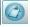

The Report
The Report
The report allows you to see, graphically, what your visitors do in your website: where they go (and don't), on which area they click most, where they are from, how many time they spent in your website (session duration), which pages they visited, and so on.
With the help of statistical reports, you can accurately analyze your data to the deepest detailed level and according to your specific needs.
Let's take a look at eZ odoscope reports.
The Report Tools Bar
The report tools bar is the area where you can perform some 'Basic Actions' regarding reports.

eZ odoscope Reports Tool Bar
The following basic actions can be performed on this bar:
- Create a new (blank) report: Click on the PLUS sign at the right side of the report's name, then click on "Add New Report"
- Important: You can also add some predefined reports to your dashboard, by clicking on the following options:
- Report: This option will add a group of the most common reports odoscope provides: odosmap, Technical and Geolocation reports to your dashboard
- odosmap: This option will add an odosmap report to your dashboard
- Technical Report: This option will add some Technical reports to your dashboard: Browser, Operating System, Screen Resolution and Hostnames
- Geolocation: This option will add a Geolocation report to your dashboard: Origin
- Delete a report: Click on "Delete Report" (the EX image at the right side of the report's name)
- Rename a report: Click on its name (highlight it), rename it and press ENTER
- Switch reports: Click on the icon shown at the left side of the report's name:
eZ odoscope Report Icon
This is the Report creation screen:
eZ odoscope Creating a Report
This screen is shown every time you add a new report to the dashboard. The first step you may take is choosing a template for your slide/report.
Note: When you access eZ odoscope for the first time, you already have a default report created. It is the "Standard Report". Note that you can rename it at any time. Refer to the 'Report Tools Bar' described below to see how to rename a report.
The Report Template
The three blue squares shown on the report creation screen are the possible templates for your report's slide(s).
There are three templates available: 2 spaces (you can add two charts to the slide), 1 space (you can add one chart to the slide) and 4 spaces (you can add four charts to the slide). Select the template you want your slide (or report, if it is just one slide) to have by clicking on the "Select" button shown of the desired template. This is more detailed further below.
Note that you can have several slides on your report, and that hey can have different templates (number of spaces/charts), which means you can have something like what is shown on the screen shot below:
eZ odoscope Report Templates
As you can see, the report above has four slides. The first and second ones have 2 spaces, which means you will be able to add two charts to them. The third slide has just one space, which means you will be able to add one chart to it. And the fourth slide has four spaces, which means you will be able to add four charts to it. And this is just ONE report.
Now, how do you add slides to your report? It's quite simple: when you create a new report, you have to click on the "Select" area/button of one of the templates available to choose how many spaces you want your first slide to have.If you want a report with more than one slide, just keep clicking on the "Select" button of the templates(s) you want your slide(s) to have, untill you are satisfied with the number of slides of your report. When you have added all the slides you need to your report, just click OUT of the templates (three blue squares) area. If you need to delete slides from your report, later, you can do it by clicking on the little blue x in the top right corner of the slide - just like you would close a normal window.
Adding Charts to your Report
So let's say you have created a report, and it has one slide with two spaces. That means you will be able to add two charts to it.Select the slide you want to add charts to by double clicking on it.A screen similar the one you see below will be shown:
eZ odoscope Adding Charts to Slide
At the left side of the screen you can see the odoscope Explorer. Refer to the previous link in order to access the documentation available for it. At the right side of the screen you can see the report slide.
At this point, it is very important to note that each report has three filtering levels. They are:
- First Level: The Time Period (see the Calendar)
- Second Level: The Filtergroup
- Third Level: The Usergroup
A fourth component (a very powerful one, by the way) of every report is the Keyfigure, which allows you to have a quick view on your website performance. Refer to the previous link to be familiar with keyfigures, please.
Selecting a Time Period for your Report
The time period is selected on the Calendar. Please refer to the previous link to see how to set a time period for your report(s) and set up a date filter for your report.
Adding Data to your Report
It's time to add some data to your report. Right click on the report area. You will see a screen like this:
eZ odoscope Adding Data to Chart
Let's see which type of data you can add to your report, and which other options are available, when you right click on it.
Selecting a Filtergroup
When you create a new report, it does not have a filtergroup. You have to select one, and it will be the 'main filtergroup', which means that specific information you want to analyze, i.e.: Operating System, Pages, Origin, etc.
Right click on your report area to set up a Filtergroup for it. When you right click on this area, the following option will appear: "Data". Click on it.
Click on "Filtergroups". Now you can select the Filtergroup that best applies to the data you want to analyze with your chart:
eZ odoscope Filtergroups
The chart will be created and displayed according to the Filtergroup you have selected and the time period you have set up on the Calendar:
eZ odoscope Usage Chart
Note: If you are not able to see any data, try setting up another time period.
Chart Types
You have the following chart types available for your reports:
eZ odoscope Group Bar Chart
eZ odoscope Pie Chart
eZ odoscope Line Chart
eZ odoscope Table Chart
eZ odoscope odometer
Some more info on chart types:
- You can use the odometer chart or the line chart to analyze the different Key Performance Indicators of the site, given by a keyfigure applied to a specific filter, i.e.: Bouncer, Traffic, Internal Search.
- The table chart gives you the same information you have on the odoscope Explorer, regarding: filters, visits, visits percentage and keyfigure percentage. You can use this chart type to analyze website performance given by keyfigures.
Choosing a New Chart Type
When you create a new report, eZ odoscope assigns a chart type to it. The chart type is chosen accordingly to the filtergroup you have selected.
You can choose a new chart type for your report at any time, by clicking on the following bar:
eZ odoscope Chart Types
Note: To be able to see this bar, roll the mouse over the area right ahead of the box with the filtergroup name (which is at the left top corner of your slide), untill it appears. In the example above, the filtergroup is "Hostnames".
Not all chart types are available for all filtergroups, but only the ones which better applies to the type of data you are analyzing.
You can use different charts within the same report, as long as you have selected two or more spaces for your slide. See the following example:
eZ odoscope Different Charts in a Slide
In the example above, you have a group bar chart for the Usage, and a pie chart for the days of the week.
Selecting a Usergroup for Your Report
When you create a new report, the usergroup "All Users" is automatically assigned to it. This usergroup represents all users that have visited your website in a given time period (set on the Calendar). This is the default usergroup of eZ odoscope, created when you install the extension.
Note: You need to create usergroups for your reports, before you are able to select them. Please, refer to the Usergroups documentation in order to be familiar with it.
There are two ways to select a new usergroup for your slide:
- Clicking on the "All Users" button, at the right up corner of the slide, and selecting the usergroup you want:
eZ odoscope Selecting Usergroup
- Through the odoscope Explorer, by clicking on the usergroup you want.
The usergroup will be applied to all charts of your slide/report.
Important: Remember that the reports will automatically change at any time you change one of the following items: Time Period, Usergroup, Filtergroup, and Key Figures.
Statistical Information
At the bottom of each slide, you can see the following statistical information:
eZ odoscope Report Statistical Information
You are seeing respectively: Visits, Page Impressions, and Unique Users.
For each pair of numbers, you have:
- On the left: The total amount of Visits, Page Impressions and Unique Users per Usergroup (or filters selected);
- On the right: The overall amount of Visits, Page Impressions and Unique Users that visited the website.
Note: This information changes every time the basis of your report changes (one of the filter levels: Date, Filtergroup and/or Usergroup).
Selecting a Keyfigure for Your Report
When you create a new report, the Keyfigure "Bouncer" will be automatically assigned to it. This keyfigure represents all users that have visited your website in a given time period, and have left without doing anything (bouncers). This is the default keyfigure of eZ odoscope, created when you install the extension.
Note: You need to create keyfigures for your reports, before you are able to select them. Please, refer to the Keyfigures documentation in order to be familiar with it.
Select a keyfigure for your report in the odoscope Explorer, clicking on the one you want to use.
The odoscope Explorer
The odoscope Explorer is available at the left side of your reports area. It allows you to perform some important actions on your report, as:
- Selecting Filtergroups and filters
- Creating and Selecting Keyfigures
- Creating and Selecting Usergroups
Please, refer to the previous links in order to be familiar with each function they describe.
Additional Data
There are some additional options available that you can use on your report, regarding data visualization and analysis.
If you right click on your report, you will see the option "Data". Click on it. Then click on "Additional Data".
A screen similar to the following one will be displayed:
eZ odoscope Additional Data
As you can see, there are the following options available, on Additional Data:
odosMap
The odosMap is a report that allows you to visualize your website traffic flow and understand the visitors behavior.
Please, refer to the odosMap documentation, in order to be familiar with it.
Overview Pages
This page gives an overview of your website pages visits, and offers valuable information on the traffic they had. It is based on the "Pages" filtergroup and filters.
eZ odoscope Overview Pages
It is possible to sort all the columns shown on this screen (descending and ascending). Let's see what each one of them means:
- Label: The name of the page;
- Visits: The number of visits the page had;
- Page Impressions: The number of times the page had an interaction;
- Duration Session: The average time spent per visit (=session);
- Duration Pi: The average time spent per page impression;
- Entries: The number of times the page represented the beginning of a session on your website;
- Exits: The number of times the readers left your website from the page.
Population
The population gauge gives relative and absolute value information about the current filtering.
eZ odoscope Population Gauge
No filters set = All Users = 100% = 'NN,NNN' (total number of) Visits. If you change the time period you will get 100%, but another absolute value.
If you filter or use a usergroup (e.g. Europe and North America) the population gauge will give you information on what amount of the whole traffic you have filtered
Additional Options
When you right click on a report, you can see some additional options available, besides "Data" (which we have described previously):
eZ odoscope Additional Options
Use them for your convenience and according to your needs:
- Sort By: This option allows the sorting of the report by values or labels;
- Print: Use this option to print your report;
- Export to Image: You can create a PNG file containing your report, if you use this option;
- Copy Data to Clipboard: This option copies the report to the clipboard, so you can use it on other applications, as a text editor, for example.
Report Filtering Levels
If you select a filter that has sub-levels, you can see a more detailed (filtered) information on your report, if you select the bar chart type.
Let's imagine you have created a report with a bar chart and have selected the Usergroup "All Users" and the Filtergroup "Origin" for it. You will see a report similar to the following one:
eZ odoscope Origin Report
As you can see, the report shows the visits of people from all regions (continents) in the world, and each bar represents one region.
Now let's take a look at the "Origin" filtergroup, in the odoscope Explorer:
eZ odoscope Origin Levels
As you can see, the Origin filtergroup has several levels:
- Region (continent)
- Country
- County (province, state)
- City
This means you can see the detailed information untill the last level, on your report. Just double click on one bar to go deeper and see the information detailed to the last level of the filtergroup.
Double click on a bar to see the next filtering level (in this case, countries):
eZ odoscope Report Filtering Levels
Another double click on one bar will show the next filtering level (in this case, counties), and then the last filtering level, the cities.
Hint: When you are looking at a more detailed filtering level, you can go back to the first level by clicking on the button "Regroup", shown is the screen shot above, at the right side of the report area.
Andrea Melo (12/07/2012 4:07 pm)
Andrea Melo (25/01/2013 4:06 pm)
Comments
There are no comments.